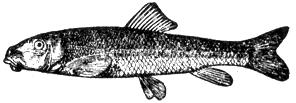
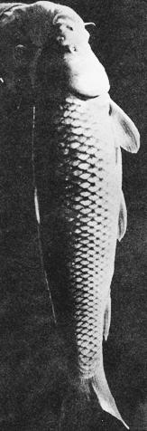
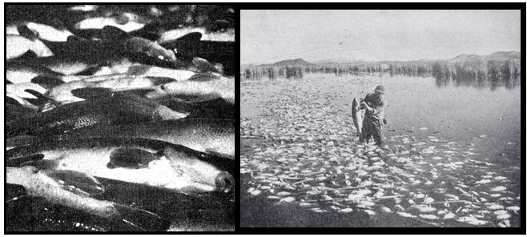

Sometimes I get the impression that guests at my table may be just a bit wary . . . when they're not downright worried about what they're eating. This is true, anyway, of those who've read my articles extolling the gourmet delights of many foods that are unused-or underused-because of prejudice.
These little cutlets, now, could they be rattlesnake? Truthfully, no. I've heard such fare praised, but frankly I haven't gotten up enough nerve to give it a try. If I were starving . . . well, maybe I would.
Then there's always some suspicion about wild plants, berries, and whatnot. Can I be certain they're non-poisonous? Yes, I can, or I wouldn't try them myself . . . especially the mushrooms that I eat only when I have absolutely no doubts about their safety.
The fish on the table-fresh, pickled, canned, in loaves, or whatever-may be a different matter, however. That is, it may not be trout, bass, salmon, or any of the so-called "game species. Instead, it could very well be some of the numerous varieties we tend to label as "trash" or "rough" fish . . .you know, carp, suckers, chiselmouths, squawfish, bullhead catfish and others in the non-game category.
Even though my guests may eat these fish with pleasure and praise, many will nevertheless appear somewhat shaken when they're informed of the exact species they've consumed. The old business of, "Ughhh . . . trash fish!"
Such a reaction is, as far as I'm concerned, plain silly. Why all this fuss about labels? Such traditional biases are doubly ridiculous during the present inflation, with salmon, tuna, and so on soaring into the luxury class. Even the once inexpensive=: mackerel and sardines have price tags that send me to the nearest stream, lake, or reservoir to catch my own fish.
On many such expeditions, my quarry is carp. This prolific fish-introduced into the U.S. by more appreciative Europeans way back in the 1880's-has become a bit more acceptable as food than some "trash" species . . . and is also getting a reputation as a darned tricky creature to catch with light tackle. As a result, several million pounds of carp are harvested and sold as human food throughout this country each year. Even more is used to feed pets, chickens, and hatchery-reared fish.
Carp caught in non-stagnant waters make excellent eating whether baked, fried, pickled, smoked, or canned for use in patties, loaves, and so on. Almost as good are the many varieties of suckers. Their meat is softer when canned, but also very sweet and flavorful . . . and far superior to mackerel.
Skinning these and other rough fish eliminates a lot of their undesirable strong flavor. . . and is the easiest way to prepare: them anyway. A soak in a salt or vinegar solution also helps to control odor problems, especially if the catch came from somewhat stagnant water.
Canning fish-and meat in general-isn't as difficult as some people believe, but a pressure cooker must be used and the directions for treatment of these, spoilage-prone foods must be strictly followed. The packed jars, for instance, are always processed in the cooker for at least 90 minutes at a pressure of 10 pounds.
Since methods of canning fish vary with the species (because of differences in firmness of flesh and so on), a good book on the subject should be consulted. Some useful source are Putting Food By by Ruth Hertzberg, Beatrice Vaughan, and Janet Greene, $4.50; Butchering, Processing and Preserve tion of Meat by Frank G. Ashbrook, $4.95; and Complete Guide to Home Canning, Preserving and Freezing by the U.S. Department of Agriculture, $2.50. All are available through MOTHER'S Bookshelf. You might also want to consult Conservation Bulletin 28, Home Canning of Fishery Products, U.S. Department of the Interior, Washington, D.C. 20242 (current price available from the publisher). The Kerr Home Canning Book (Kerr Glass Corporation, Consumer Products Division, Dept. TMEN, Sand Springs, Oklahoma 74063) and The Ball Blue Book (Ball Brothers Company, Muncie, Indiana 47302) are very reliable guides to home canning.
A good pickling recipe will produce a product that can be used directly from the jar (which should be pint or half-pint sized only). Here's one I picked out of an intriguing cookbook issued by the South Dakota Department of Game, Fish, and Parks (Pierre, South Dakota 57501). It's called Cooking the Sportsman's Harvest , costs only one dollar, and contains directions for preparing many infrequently used fish, mammals and birds.
Pack chunks of raw fish into pint or half-pint jars. The pieces can be one to two inches long or larger, depending on the species. Mix together:
1 teaspoon salt
1/4 cup vinegar
1/4 cup tomato cocktail sauce
1 teaspoon brown sugar
Pour this solution over the fish, leaving the usual inch of head space. Seal the jars and process there an a pressure cooker at 10 pounds for 90 minutes.
Some pickling recipes advise simply soaking fish in a salt brine for a few hours (even overnight), rinsing it several times in cold water, and then canning. Or you could try the following method to make a sardine-like product from squawfish, suckers, chiselmouth, or carp:
To each pint jar of fish pieces, add the following:
1/2 teaspoon salt
1 teaspoon vinegar
1/4 teaspoon dried onion flakes or onion salt
1 teaspoon olive oil or soy oil
Dried hot pepper to taste
The seasoning can, of course, be varied. If you like mustard, add about one tablespoonful to each pint of fish. . . or try horseradish or tomato sauce. Then seal the jars and process them in a pressure cooker at 10 pounds for 90 minutes.
If you want pickled fish without canning, here's a basic recipe (also from the South Dakota cookbook)
Fillet whatever fish you have, and cut the pieces into strips one inch wide. Pack the chunks loosely into quart or other jars until the containers are about 3/4 full. Add to each quart:
3 tablespoons salt
1/4 cup sugar
2 teaspoons pickling spices
1 medium onion, diced
Top off the jar with vinegar (white is often preferred) and refrigerate it for about four days. The mixture will keep a long time in the refrigerator, and should be shaken up a bit from time to time.
It's fortunate that there are so many delicious ways to prepare carp, suckers, and the like . . . because they'll be much more common in the diet of the future. As the world's population continues to grow-with no corresponding increases in food production nor advances in our system of distribution-trash and rough fish, both freshwater and saltwater, are becoming increasingly important sources of protein. In the years ahead, hungry people will discard their squeamishness and these highly prolific species will be not only acceptable but respectable. When I eat my canned rough fish, I'm glad I got rid of my own prejudices long ago.
|
The carp is easily known by its distinctive large scales |
Suckers are marketed in large amounts for use as human food. Millions of carp and other ""trash fish"" are eradicated from western waters each year to be replaced by game species |
 |
|
 |
 |
|